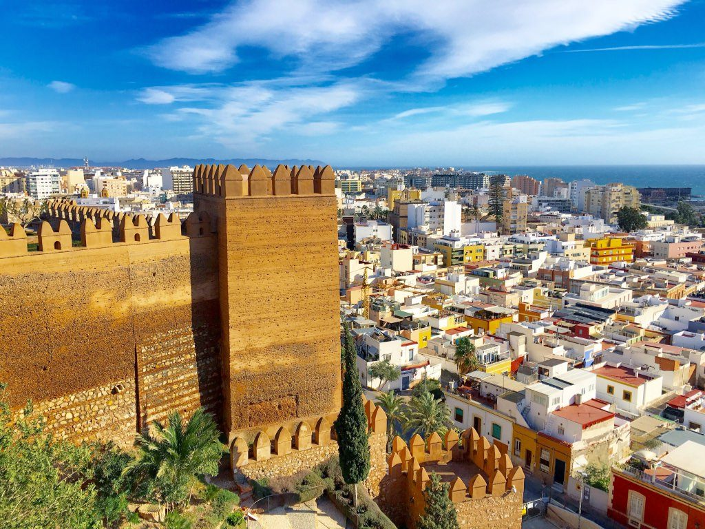
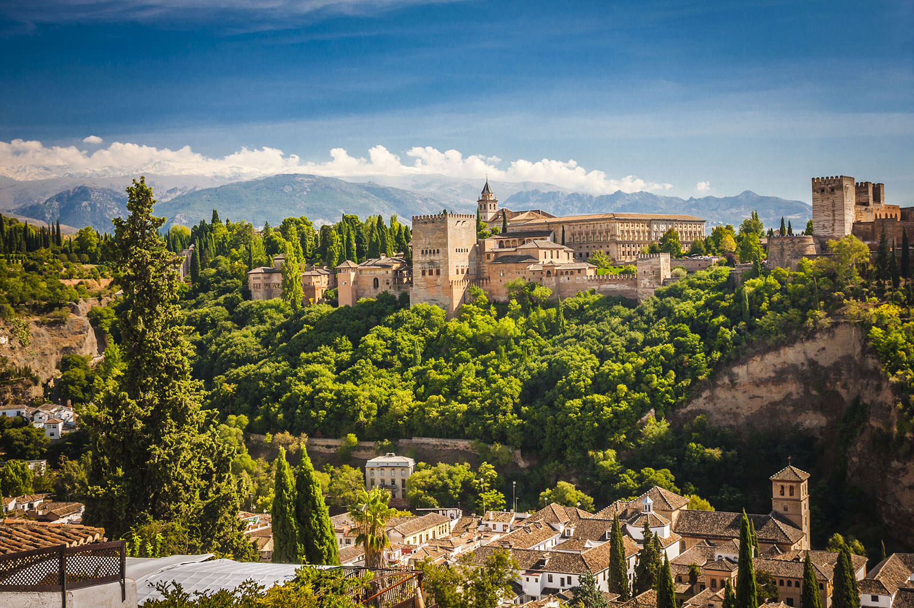
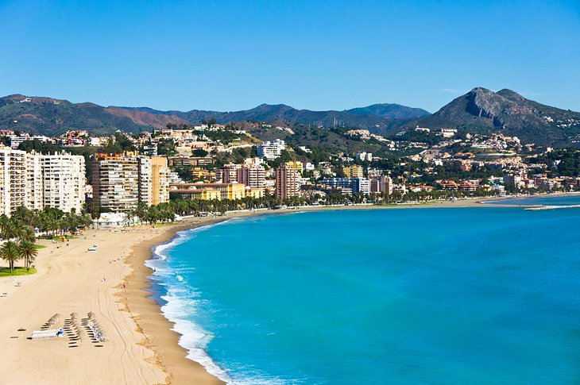
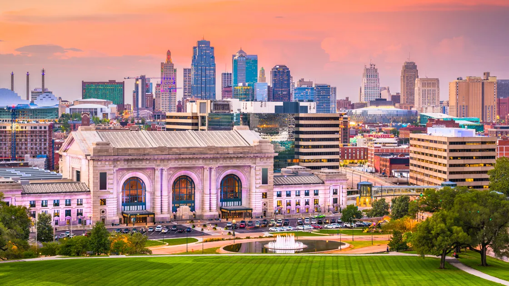

Places Where I Have Lived
Almeria
My hometown

Almeria is a little town in the very south of Spain, by the Mediterranean see, just a step away from Africa.
I lived here since I was born until I was 18, and life couldn't have been better
It's a slow life, where you enjoy the little things in life and the good weather.
Granada
Univeristy life

In Granada I went to Univeristy to study Philosophy.
This is without a doubt the prettiest city I have lived in.
Every person I have come across that has been in Granada, describe it always with the same word: Granada is magic.
Malaga
A couple of hard years

Malaga is a great city, it's beautiful, full of life (and turists) and hometown of the handsome Antonio Banderas
I lived a couple of years here.
London
My favorite

London it's just amazing.
I loved living here. The energy is awesome, the whole city has such a unique personality.
I learned English by myself, I grew as a person and I became stronger.
Moving to London changed my life in so many different ways. It made it better and opened my world.
Kansas City
Looking for the American Dream

It was hard to leave Europe. There is defenently cultural shocks and I am still getting used to many things,
but the jobs oportunities here are incredible. I feel that I have a future and I can build a career.
Los Angeles
Unexpected

Maybe in the near future I will be moving to Los Angeles... we'll see...